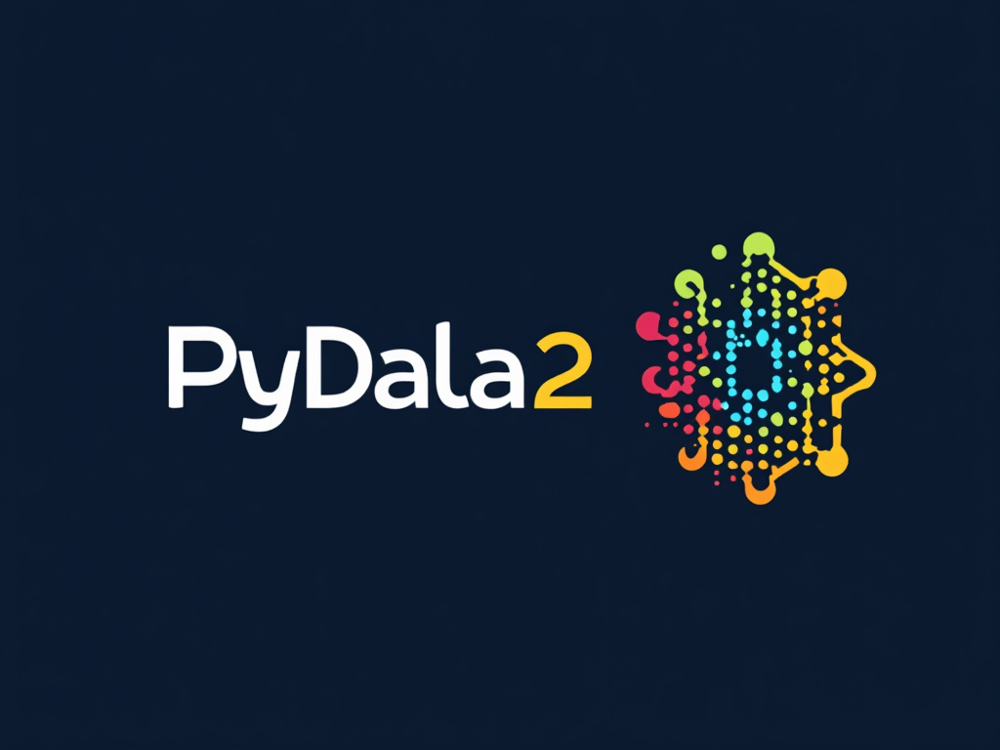

PyDala2¶



PyDala2 is a high-performance Python library for managing Parquet datasets with advanced metadata capabilities, built on Apache Arrow and DuckDB.
🯠What is PyDala2?¶
PyDala2 provides a sophisticated dataset management system that combines: - Automatic optimization of Parquet file layouts - Intelligent metadata management with schema evolution - Multi-engine query processing (PyArrow + DuckDB) - Production-ready features like delta updates and time-based operations
✨ Key Features¶
🚀 Core Capabilities¶
- Smart Parquet Management: Automatic file optimization, compaction, and layout management
- Dual Engine Architecture: Seamlessly switches between PyArrow (fast scans) and DuckDB (complex queries)
- Advanced Metadata: Automatic schema unification, statistics tracking, and efficient updates
- Hive Partitioning: Native support for partitioned datasets with automatic inference
📊 Data Operations¶
- Automatic Filter Pushdown: Intelligently routes queries to the optimal engine
- Delta Updates: Merge new data efficiently with change detection
- Schema Evolution: Handle schema changes without breaking existing data
- Time-based Operations: Built-in support for time series and temporal data
🏗️ Production Features¶
- Catalog System: Centralized dataset management across namespaces
- Cloud Storage: Native S3 integration with caching and credential management
- Optimization Operations: Automatic data type optimization, file compaction, and sorting
- Robust Error Handling: Automatic schema repair and graceful degradation
🯠Use Cases¶
Data Engineering¶
# Efficient ETL pipeline
dataset = ParquetDataset("data/sales")
dataset.write_to_dataset(
new_sales_data,
mode="delta",
partition_by=["date", "region"],
sort_by="timestamp DESC"
)
Analytics¶
# Complex queries with automatic optimization
result = dataset.filter("""
date > '2023-01-01'
AND region IN ('US', 'EU')
AND amount > 1000
""")
Data Lake Management¶
# Catalog-based dataset organization
catalog = Catalog("datalake.yaml")
sales = catalog.get_table("sales")
customers = catalog.get_table("customers")
🚀 Quick Example¶
from pydala import ParquetDataset
import polars as pl
# Create a dataset (directory auto-created)
dataset = ParquetDataset("data/sales")
# Write data with automatic optimization
data = pl.DataFrame({
'id': range(1000),
'date': pl.date_range(start=2023-01-01, end=2023-12-31, interval='1d', eager=True).head(1000),
'region': ['US', 'EU', 'APAC'] * 333 + ['US'],
'amount': [i * 10.5 for i in range(1000)]
})
dataset.write_to_dataset(
data,
partition_by=["date", "region"],
max_rows_per_file=100000,
compression="zstd"
)
# Read and filter - automatic backend selection
result = dataset.filter("amount > 500 AND region = 'US'")
print(result.collect())
# Use SQL directly
sql_result = dataset.ddb_con.sql("""
SELECT region, COUNT(*) as count, AVG(amount) as avg_amount
FROM dataset
GROUP BY region
""").pl()
🏗️ Architecture¶
graph TD
A[PyDala2 Application] --> B[ParquetDataset]
B --> C[PydalaTable]
C --> D[PyArrow Dataset]
C --> E[DuckDB Relation]
B --> F[Metadata Management]
F --> G[_metadata File]
F --> H[_file_metadata File]
B --> I[Optimization]
I --> J[Compaction]
I --> K[Schema Evolution]
I --> L[Delta Updates]
B --> M[Catalog Integration]
M --> N[YAML Configuration]
M --> O[Namespace Management]
📚 Documentation¶
Our comprehensive documentation covers:
Getting Started¶
- Installation Guide - Setup and configuration
- Quick Start - 5-minute tutorial
User Guide¶
- Basic Usage - Core operations and patterns
- Data Operations - Filtering, aggregation, and transformations
- Performance Optimization - Tuning for production workloads
- Catalog Management - Organizing datasets
- Schema Management - Schema evolution and validation
API Reference¶
- Core Classes - BaseDataset, Config
- Dataset Classes - ParquetDataset and variants
- Table Operations - PydalaTable interface
- Catalog System - Catalog and namespace management
- Filesystem - Storage backends and cloud integration
- Utilities - Helper functions and tools
Advanced Topics¶
- Deployment Guide - Production deployment
- Performance Tuning - Advanced optimization
- Troubleshooting - Common issues and solutions
- Integration Patterns - Using PyDala2 with other tools
🤠Contributing¶
We welcome contributions! Please see our Contributing Guide for details.